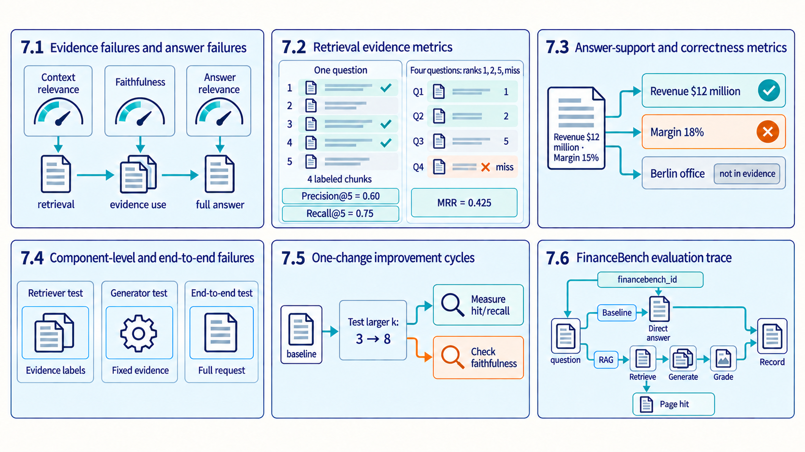
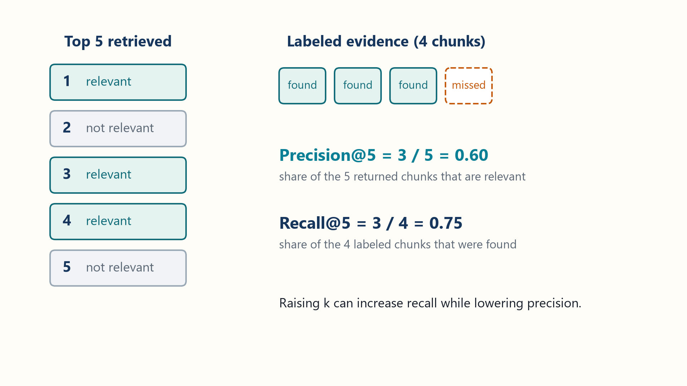

7 Evaluating answers against retrieved evidence
An incorrect RAG answer can result from missing evidence, evidence omitted from the request, or a model misreading the supplied passages. Chapter 6 connects preparation records with selected passages, the submitted request, and the answer. Evaluating retrieval and generation separately helps distinguish these failures. Testing the complete pipeline then shows whether a change improves the final response.

The diagnostic path identifies whether the retriever found the needed evidence, whether generation used it faithfully, and whether the complete answer met the task.
7.1 Evidence failures and answer failures
A RAG answer depends on both selected evidence and model behavior. A single aggregate score conceals whether context was irrelevant, claims were unfaithful, or output missed user intent. The RAG triad names context relevance, faithfulness, and answer relevance as distinct diagnostic views.
Context relevance: Whether the retrieved passages are useful for the question. Faithfulness: Whether the answer’s claims are supported by the supplied context. Answer relevance: Whether the response resolves the requested information rather than merely discussing the same topic. ARES1 is one research framework that evaluates these dimensions under a defined judge and labeling procedure. Context relevance belongs mainly to retrieval, faithfulness to evidence use, and answer relevance to the complete response.
A faithful answer can still be irrelevant, and a relevant answer can still be unsupported. Separate scores preserve these differences when a combined score would hide them.
When a RAG answer is wrong, the visible symptom suggests where to begin inspecting the records. Several stages can produce the same symptom:
| Symptom | Possible failing stage | First evidence to inspect |
|---|---|---|
| Relevant source never appears | Source collection, parsing, chunking, indexing, query, filtering, or retrieval | Source text, parsed chunks, index entries, access rules, and candidate list |
| Relevant source appears but is ranked low | Query, embedding, lexical signal, filters, or reranker | Per-stage scores and query rewrite |
| Correct evidence selected, unsupported answer | Request assembly, generation, or answer checks | Actual submitted request, claim support, and citations |
| Supported answer does not answer question | Task prompt or question interpretation | Question, answer-relevance rubric, and route |

The grid compares labeled-evidence presence in retrieved candidates with answer support against the submitted context. Each cell identifies records to inspect, not a unique cause. Evidence found by retrieval may be removed before generation, while an unsupported answer with missed evidence can involve both an upstream omission and a generation error. The source, parsed chunks, index, retrieved candidates, submitted request, and claim-support results show where the relevant information was lost or misused.
The three dimensions correspond to different components and require different repair actions. Missing evidence limits how completely a task can be answered from context, but it does not force low faithfulness. An answer stating that the context lacks the needed fact remains fully supported. A diagnostic record keeps query, ranked candidates, selected context, claims, citations, and final answer together so each relationship can be scored without reconstructing the run. Section 7.4 then tests how these components interact in the complete pipeline.
7.2 Retrieval evidence metrics
The triad identifies retrieval relevance as a separate system question. A retrieval metric needs labeled evidence units so it can compare the ranked result with the source that actually supports the answer. Retrieval hit at k, written Hit@k, measures presence, while reciprocal rank rewards an earlier first hit.
For one question, let \(E\) be the labeled evidence set and \(R_k\) the set of distinct source units in the first \(k\) result positions. Here, \(k\) is a positive integer, and both sets use the same unit, such as a chunk ID. Hit@k is one when the sets intersect. It records at least one evidence hit, not whether all parts of the question can be answered.
\[ \mathrm{hit}@k=\mathbb{1}(R_k\cap E\ne\emptyset) \tag{7.1}\]
Here, \(R_k\) contains the top-k retrieved source units, \(E\) contains one or more acceptable evidence units, and the indicator returns one for a nonempty intersection. The metric checks evidence presence but ignores how many irrelevant chunks were also returned.
Precision@k and recall@k reuse the same labeled sets but answer different questions. Precision measures how concentrated the top-k results are with relevant evidence, while recall measures how much of all labeled evidence was recovered.
\[ \mathrm{Precision}@k=\frac{\lvert R_k\cap E\rvert}{k} \tag{7.2}\]
For retrieval precision, the numerator is the number of units shared by \(R_k\) and \(E\), and the denominator is the requested result count \(k\). This convention counts unfilled result positions as misses if fewer than \(k\) units return. Precision over the results actually returned instead divides by their count. The evaluation record must distinguish these conventions. Duplicate IDs are removed before ranking and scoring, so repeated copies do not count as separate evidence.
\[ \mathrm{Recall}@k=\frac{\lvert R_k\cap E\rvert}{\lvert E\rvert} \tag{7.3}\]
For retrieval recall, the numerator is unchanged but the denominator is the number of labeled relevant units in \(E\). This calculation requires at least one labeled unit. An empty label set produces an unscored recall result unless the evaluation defines another convention. Incomplete labels can mark a useful alternative source as irrelevant and fail to reveal evidence that is still missing.
Example: Retrieval precision and recall at five
A question has four labeled relevant chunks. The retriever returns five chunks, three of which belong to the labeled evidence set.
1. The relevant intersection contains three chunks. 2. Precision@5 = 3 / 5 = 0.60. 3. Recall@5 = 3 / 4 = 0.75. Result: The top five contain 60 percent relevant material and recover 75 percent of the known evidence.
Interpretation: Increasing k may raise recall while lowering precision and consuming more context. The downstream generator determines whether the extra evidence helps or distracts.

Mean Reciprocal Rank (MRR): A retrieval metric that gives more credit when the first relevant result appears earlier in the ranked list.
\[ MRR=\frac{1}{N}\sum_{i=1}^{N}\begin{cases}\frac{1}{r_i},&\text{if a relevant result is retrieved}\\0,&\text{otherwise}\end{cases} \tag{7.4}\]
Here, \(N\) is the positive number of evaluated questions and \(r_i\) is the rank of the first relevant result for question \(i\). A question with no relevant result within the assessed depth contributes zero. The assessment depth is recorded because a miss within five results does not mean no evidence exists farther down the list. Rank 1 contributes 1, rank 2 contributes 0.5, and later hits contribute less. MRR ignores additional relevant results after the first, so recall is also needed when an answer requires several passages.
Example: Hit@5 and reciprocal rank
For four questions, the first relevant pages appear at ranks 1, 2, and 5, while the fourth question has no relevant page in the evaluated list.
1. The first three questions have hit@5 = 1 and the missed question has hit@5 = 0, so average hit@5 = 3/4 = 0.75. 2. Reciprocal-rank contributions are 1, 1/2, 1/5, and 0 for the miss. 3. MRR = (1 + 0.5 + 0.2 + 0) / 4 = 0.425. Result: The retriever finds evidence for most questions by rank 5, but one miss and later hits lower both metrics.
Interpretation: Answer quality may still suffer when the relevant passage appears late or the context budget admits only a few passages. Hit@5 alone hides the difference between rank 1 and rank 5.
The evidence labels must use the same unit as retrieval. Page-level labels and chunk-level results require a documented mapping.
Label source
Evidence labels can come from source document pages, reference citations, domain expert annotations, or synthetic pairs. Their creation method and version belong in the evaluation record. Synthetic or incomplete labels need checks against the source: numerical precision does not establish that the labels identify the right evidence.
7.3 Answer-support and correctness metrics
Retrieval metrics can show that the right page or chunk entered the candidate set. They cannot show whether the model read that evidence correctly or whether the final answer matches the ground truth. Generation evaluation scores correctness, faithfulness, citation support, and answer relevance with the selected context held visible.
Correctness: Whether the answer matches a trusted result or expert judgment. Faithfulness checks whether its claims follow from the retrieved evidence. Citation support: Whether the exact evidence attached to each claim supports that claim. These measurements answer different questions. FActScore2 demonstrates how long answers can be split into atomic factual claims for support checks. Its reported results do not remove the need for local labels and human review. A model judge can help with open text, but deterministic numeric comparison and source-page checks should remain code-based where possible.
The evaluator checks each answer in stages so these measurements remain separate:
- Normalize the answer form only as much as the task permits, preserving units and qualifiers.
- Score exact or numeric correctness when a verifiable ground truth exists.
- Decompose longer answers into claims and identify the cited or supporting chunks.
- Grade whether each material claim is entailed, contradicted, or unsupported by the supplied evidence.
- Score whether the supported answer addresses the user’s actual question.
For the question, “What were revenue and operating margin?” the retrieved page states that revenue was $12 million and operating margin was 15%. An answer says, “Revenue was $12 million, operating margin was 18%, and the company opened a Berlin office.” Its three claims can be assessed separately. The revenue claim is correct and supported. The margin claim is incorrect and contradicted by the page. A trusted company record may confirm the Berlin office, but that fact was not supplied in the request. That claim can be correct in the wider world while remaining unfaithful to the evidence given to the model. The three labels show whether to repair retrieval, generation, or the task’s evidence rule instead of assigning one opaque score to the whole answer.
Es and colleagues3 propose RAGAS, a set of model-based metrics that can automate part of this claim-support analysis. The software library Ragas implements these evaluations. Its faithfulness metric first splits an answer into claims, then asks an evaluator model whether each follows from the supplied passages. The score is the supported share of the extracted claims. For the three-claim example above, a reviewer who finds support only for revenue records 1/3, about 0.33. That illustrative support score does not measure whether the question was fully answered. The versioned guide Migrating from Ragas 0.3 to 0.44 describes the v0.4.1 interface used below.
The caller awaits this asynchronous function, allowing other scheduled work to run while the evaluator is awaited. It supplies the Chapter 6 trace and a compatible evaluator model. The trace’s selected passages are the scoring context because Chapter 6 requires its request renderer to preserve them unchanged. The saved model_request lets a review check that assumption. A different renderer that drops or changes passages needs a record of the context actually submitted. A trace with no generated answer returns an unscored result without calling the evaluator.
Code example: Ragas v0.4.1 scores the answer against the selected context under the request-preservation assumption.
import math
import ragas
from ragas.metrics.collections import Faithfulness
async def score_faithfulness(trace, evaluator_llm):
status = trace.get("status")
if status == "insufficient_evidence":
return {"ragas_version": ragas.__version__,
"faithfulness": None,
"faithfulness_reason": "No answer was generated."}
if status != "answered":
raise ValueError("Unknown answer status")
for field in ("question", "answer", "model_request"):
if not isinstance(trace.get(field), str) or not trace[field].strip():
raise ValueError(f"Missing text field: {field}")
contexts = [item["chunk_text"] for item in trace["retrieved"]]
if not contexts or any(not isinstance(text, str) or not text.strip()
for text in contexts):
raise ValueError("An answered RAG trace needs evidence text")
faithfulness = Faithfulness(llm=evaluator_llm)
result = await faithfulness.ascore(
user_input=trace["question"],
response=trace["answer"],
retrieved_contexts=contexts,
)
score = float(result.value)
if not math.isfinite(score) or not 0 <= score <= 1:
raise ValueError("Faithfulness score must be finite and between 0 and 1")
return {
"ragas_version": ragas.__version__,
"faithfulness": score,
"faithfulness_reason": result.reason,
}The function returns the library version, score, and optional reason. Unknown statuses, missing required text fields, and non-finite or out-of-range scores raise ValueError. Malformed retrieved records and evaluator failures propagate to the caller rather than becoming zero faithfulness. The experiment record also needs the evaluator model and metric configuration, which this function does not collect. A human-audited subset and deterministic citation checks remain necessary because the model’s claim extraction and support judgments can be wrong. Earlier Ragas interfaces used SingleTurnSample and single_turn_ascore; this listing uses the v0.4.1 collection interface.
Faithfulness is context-relative
A statement can be true in the world but unfaithful to the supplied evidence. A grounded product must either retrieve support or label the statement as external knowledge. It cannot silently substitute model memory for retrieved reference data.
Deterministic checks are preferable for exact numbers, identifiers, schema rules, and citation membership. Human or model judgment is useful for paraphrase, completeness, and open-ended support, but the judge receives the same bounded evidence and a calibrated rubric. Per-claim results expose partial support that an answer-level label alone would hide.
7.4 Component-level and end-to-end failures
Retrieval and generation metrics expose local behavior. A product decision also needs the quality of the final response under the complete pipeline. Component evaluation diagnoses one stage, while end-to-end evaluation measures final output quality and can hide which specific stage caused an issue.
End-to-end tests support release decisions, while component tests support repair decisions. Both are needed to detect a local metric gain that harms the final answer on the evaluated cases.
A retriever can improve evidence hit while adding so much irrelevant context that answer quality falls. A stronger generator can mask weak retrieval on familiar questions by answering from weights. The comparison should retain the same question set, retrieved identifiers, context text, and final outputs.
Ablation
An ablation is an experiment that removes or replaces a component to test its contribution. The question set and remaining settings stay fixed. A controlled setting comparison uses the same principle when changing a value such as top-k rather than removing a component.
Holding the generator fixed while replacing retrieval, or holding retrieved context fixed while changing the prompt, helps isolate the effect of that change in the tested configuration. Repeated trials are needed when generation or grading varies.
Limitation: Components interact. The best isolated retriever may not produce the best context for a particular generator.
In component tests, a retriever is scored against labeled evidence so a strong model cannot answer from memory, and a generator receives a fixed evidence set so faithfulness changes are not confused with retrieval changes. End-to-end tests then catch interactions that component tests cannot reproduce. When a retriever broadens recall, it can add enough noise to lower faithfulness: Amiraz and colleagues5 report that irrelevant passages can cause incorrect answers. Release evidence therefore connects each component change to the final outcome.
7.5 One-change improvement cycles
Component metrics and ablations can locate a weak stage. Changing chunk size, top-k, query rewriting, reranking, prompt, and model together would leave their individual contributions unresolved by that comparison. A one-change cycle targets one metric, changes one variable, and reruns the fixed evaluation set to measure trade-offs.
A controlled RAG study can vary the generation prompt, generation model, top-k, or chunk size. A local hypothesis might predict that increasing k from 3 to 8 raises page Hit@k for multi-page answers while reducing faithfulness if irrelevant chunks enter the context. The resulting comparison retains the baseline and every changed setting. Confirm a promising component result on held-out release cases, use paired uncertainty where the same questions are compared, and repeat trials when retrieval, grading, or generation can vary.
| Change | Expected primary metric | Likely trade-off | Required trace evidence |
|---|---|---|---|
| Smaller chunks | Test whether precision improves | Incomplete claim context and more index entries | Chunk IDs, parent page, duplicate rate |
| Larger top-k | Test whether hit or recall improves | More context noise, cost, and latency | Ranked list, selected subset, token count |
| Hybrid retrieval | Test coverage of exact terms and paraphrases | Two searches and a rank-fusion choice | Lexical/vector scores and fusion rule |
| Reranking | Test whether relevant evidence ranks earlier | Additional model latency and cost | Candidate set, reranker scores, final ranks |
| Grounding prompt | Test faithfulness and citation support | Longer output or more refusals | Prompt version, citations, unsupported claims |
The best setting can vary by question type. A chunk size that works for a numeric table lookup may not work for a narrative explanation. Report per-question or per-type results before selecting a global default.
Before the run, the cycle states its hypothesis, the component it changes, the expected primary metric, and likely side effects. The evaluation set, labels, and protocol stay fixed unless a version change is part of the experiment.
Primary metrics alone are insufficient when changes trade recall for noise, quality for latency, or answer coverage for refusal safety. A guardrail metric tracks a property whose allowed limit constrains the change, such as maximum latency or minimum faithfulness. It is an evaluation criterion, distinct from a safety guardrail that checks or restricts an operation. The experiment specifies tolerated changes and reports important slices beside the target metric. Repeated trials estimate run-to-run variation, while resampling fixed results estimates uncertainty from the sampled cases.
7.6 FinanceBench evaluation trace
The experiment plan has separated settings, metrics, and trade-offs. A row-level trace now shows whether those definitions connect cleanly from source file to answer and aggregate report. The same financebench_id follows a question through baseline, retrieval, evidence-page grading, generation, judge scores, and experiment comparison.
- Load the question,
question_type, ground-truth answer, labeled evidence document name, and one-based evidence page. - Run the no-retrieval baseline and record response, refusal or confident-answer behavior, tokens, latency, and model version.
- Retrieve chunks and preserve document name, one-based source page, rank, retrieval score, and chunk text.
- Calculate page-hit@k by mapping retrieved chunks back to their source pages.
- Generate from the selected evidence and store cited pages plus the complete prompt version.
- Score answer correctness and faithfulness, and retain judge explanations and model version.
- Append the row to the per-question spreadsheet and aggregate by question type.
- Repeat after one controlled setting change and compare with the baseline row.
The row-building function below receives an already completed Chapter 6 trace, its answer scores, token usage, measured latency, and a claim grader. It uses one labeled document-page pair for this case. Here, page_hit_at_5 means that pair appears among the first five selected chunks, not the first five distinct pages or every page needed by a multi-page answer. Labels covering several evidence pages require a corresponding extension of the record and metric.
Code example: One experiment row keeps component and end-to-end evidence together.
def make_experiment_row(case, answer_trace, *, experiment_id,
correctness_score, faithfulness_score,
usage, elapsed_ms, grade_claims):
status = answer_trace.get("status")
if status not in {"answered", "insufficient_evidence"}:
raise ValueError("Unknown answer status")
if type(answer_trace.get("k")) is not int or answer_trace["k"] != 5:
raise ValueError("This experiment measures page hit among five chunks")
retrieved_pages = [
(item["doc_name"], item["source_page"])
for item in answer_trace["retrieved"]
]
evidence_page = (case.evidence_doc_name, case.evidence_page)
if status == "answered":
claim_results = grade_claims(
answer=answer_trace["answer"],
retrieved=answer_trace["retrieved"],
)
else:
claim_results = []
correctness_score = faithfulness_score = None
return {
"experiment_id": experiment_id,
"financebench_id": case.financebench_id,
"question_type": case.question_type,
"question": answer_trace["question"],
"ground_truth": case.answer,
"evidence_page": evidence_page,
"retrieved_pages": retrieved_pages,
"page_hit_at_5": int(evidence_page in retrieved_pages[:5]),
"rag_answer": answer_trace["answer"],
"model_request": answer_trace["model_request"],
"cited_pages": answer_trace["cited_pages"],
"retrieved": answer_trace["retrieved"],
"claim_results": claim_results,
"status": status,
"correctness": correctness_score,
"faithfulness": faithfulness_score,
"input_tokens": usage.input_tokens,
"output_tokens": usage.output_tokens,
"latency_ms": elapsed_ms,
}The application-supplied grade_claims compares each material claim with the selected records and returns claim text, support labels, and cited identifiers. An answered trace stores those results beside the supplied answer scores and actual model request. A no-answer trace skips claim grading and stores null answer scores: absence of an answer is not a measured zero faithfulness score. Retrieval-hit results remain available. Invalid statuses and a requested k other than five raise ValueError rather than mislabeling the metric. Evaluator errors remain failed evaluation runs until the caller records or handles them.
Page identity combines document name and one-based page number. This works only when document names identify distinct files within the evaluation collection and the labels use the same numbering as ingestion. Aggregation keeps unanswered and failed runs visible rather than silently dropping them. Results grouped by question_type require defined category names and assignment rules before those comparisons can be interpreted.
Chapter conclusion
RAG is measurable because retrieval identifiers, evidence pages, answer text, and scores share one record. Chapter 8 keeps that evidence path while adding deterministic control flow, tools, validation, and human decisions.
Saad-Falcon, J., Khattab, O., Potts, C., & Zaharia, M. (2024). ARES: An automated evaluation framework for retrieval-augmented generation systems. In Proceedings of the 2024 Conference of the North American Chapter of the Association for Computational Linguistics: Human Language Technologies, Volume 1: Long Papers (pp. 338–354). Association for Computational Linguistics. https://aclanthology.org/2024.naacl-long.20/. ARES evaluates context relevance, answer faithfulness, and answer relevance with trained judges and a small human-labeled set. Its results depend on its labels and judges, and it does not prove the chapter’s component assignment is universal.↩︎
Min, S., Krishna, K., Lyu, X., Lewis, M., Yih, W., Koh, P. W., Iyyer, M., Zettlemoyer, L., & Hajishirzi, H. (2023). FActScore: Fine-grained atomic evaluation of factual precision in long-form text generation. In Proceedings of the 2023 Conference on Empirical Methods in Natural Language Processing. https://arxiv.org/abs/2305.14251. The method decomposes long answers into atomic facts and checks support against a knowledge source. It does not make world truth, context faithfulness, and citation correctness the same measure.↩︎
Es, S., James, J., Espinosa-Anke, L., & Schockaert, S. (2024). RAGAs: Automated evaluation of retrieval augmented generation. In Proceedings of the 18th Conference of the European Chapter of the Association for Computational Linguistics: System Demonstrations (pp. 150–158). Association for Computational Linguistics. https://aclanthology.org/2024.eacl-demo.16/. The paper proposes automated RAG evaluation components. These model-based scores remain proxies and need local calibration.↩︎
Ragas. (2025). Migrating from Ragas 0.3 to 0.4 (version 0.4.1 documentation). https://docs.ragas.io/en/v0.4.1/howtos/migrations/migrate_from_v03_to_v04/. The versioned documentation supports the stated interface only for that release. Check the installed version before reusing the code.↩︎
Amiraz, C., Cuconasu, F., Filice, S., & Karnin, Z. (2025). The distracting effect: Understanding irrelevant passages in RAG. In Proceedings of the 63rd Annual Meeting of the Association for Computational Linguistics, Volume 1: Long Papers (pp. 18228–18258). Association for Computational Linguistics. https://doi.org/10.18653/v1/2025.acl-long.892. The experiments show that irrelevant passages can produce incorrect answers depending on their placement, relevance, and the model. They do not show that every additional passage harms every system. ↩︎